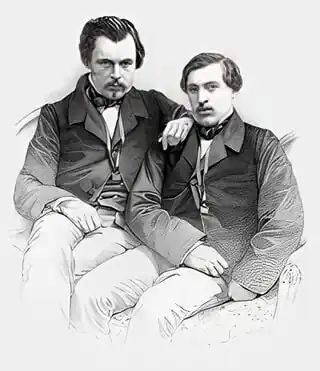
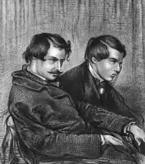

Едмон Луї Антуан Ґонкур (26 травня 1822, Нансі — 16 липня 1896, Шанрозе) і Жуль Альфред Юо Ґонкур (17 грудня 1830, Париж — 20 червня 1870, Париж) — французькі письменники, які склали літературний тандем і прославилися як романісти, історики, художні критики і мемуаристи.
У 1834 році брати втратили батька, а у 1848 р. — матір, яка за заповітом залишила спадок, що дозволив їм присвятити себе літературі, історії та мистецтву. Спочатку вони вирішили випробувати свої сили як художники, а потім як драматурги, але всі їхні спроби реалізувати себе в живописі або на сцені закінчились провалом. Не мав успіху і їхній перший роман "У 18..році" (En 18..), опублікований 2 грудня 1851 р., в день державного перевороту Наполеоном ІІІ. Хоча в художній критиці їм бракувало чуття оцінки сучасників, все ж вони зуміли відновити репутацію таких видатних постатей як Антуана Ватто, Оноре Фрагонара, Франсуа Буше та інших французьких художників-класиків.
У сфері історії вони проявили інтерес до тієї ж епохи, у якій жили, зосередившись не стільки на політичних, скільки на соціальних її аспектах, з великим успіхом і дуже майстерно використовуючи зовні пересічні документи, на зразок театральних програмок, викрійок одягу та ресторанних меню в роботах. Брати були переконані в тому, що "документальною основою роману повинно бути саме життя", Гонкури брали сюжети і характери зі свого оточення. У 1860 році виходить книга "Шарль Демаї" (Charles Demailly), в якій вони зобразили знайому їм подружню пару. У 1861 році виходить наступна книга "Сестра Філомене" (Soeur Philomne), де описується історія, що відбувається в лікарні Руана і що стала їм відома в переказі одного з друзів. У 1864 році в світ вийшов роман "Рене Мопра" (Rene Mauperin) і в цьому ж році виходить перший великий французький роман "Жерміні Ласерте" (Germinie Lacerteux), в якому зображується життя нижчого класу, йдеться про розпусне життя, яке колись вела економка Гонкурів. 1867 рік знаменується появою роману "Манетт Саломон" (Manette Salomon) присвячений художникам і натурницям, яких вони особисто знали, а в 1869 році вийшов останній спільний роман братів "Мадам Жервезе" (Madame Gervaisais). Коли Жуль помер, Едмон на кілька років відійшов від літератури, але потім повернувся до написання романів, видавши книгу про повію у 1875 році, яка несе символічну назву "Дівка Еліза" (La Fille Elisa). За нею пішли книги "Брати Земгано" 1879 р. (Les Frres Zemganno) — історія двох циркових акробатів, у яких легко впізнаються самі Ґонкури, і у 1882 році виходить книга "Актриса Фост" (La Faustin), у якій зображено життя актриси Рашель. Наприкінці життя Едмон займався творчістю японських художників, опублікувавши у 1891 р. книгу "Утамаро" (Outamaro) і у 1896 р. — "Хокусай" (Hokusa). Остання книга, яка вийшла з-під пера Едмона Ґонкура, — "Записки Ґонкурів" (Journal des Goncours) — стала найвідомішою хронікою літературного життя, яку брати почали 1851 р., а Едмон продовжував аж до своєї смерті. За заповітом Едмона де Ґонкура, складеним у 1896 році, в 1900-му році було засновано "Ґонкурівську академію", і 21 грудня 1903 року була вручена перша Ґонкурівська премія за роман "Ворожа сила" Джон-Антуана Но.